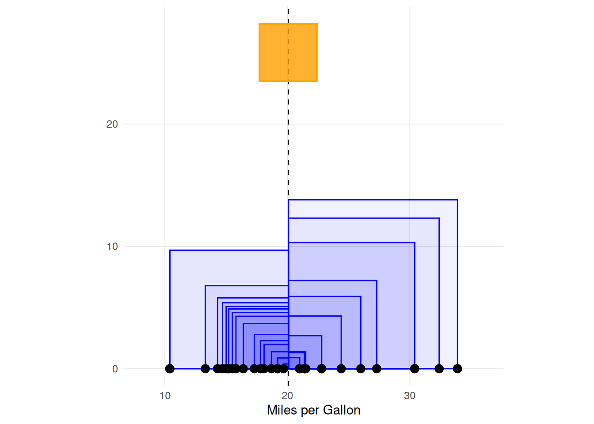
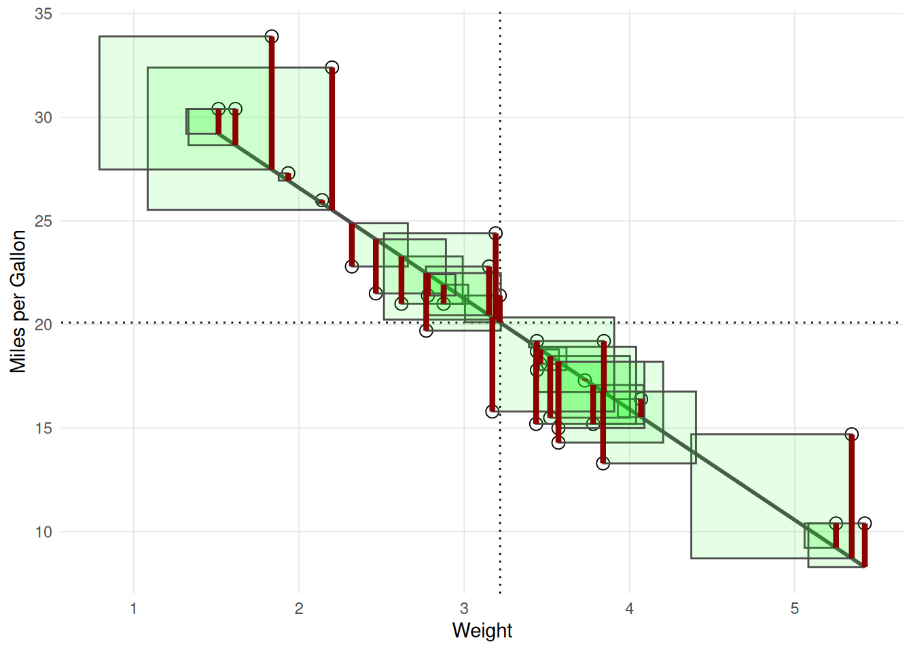
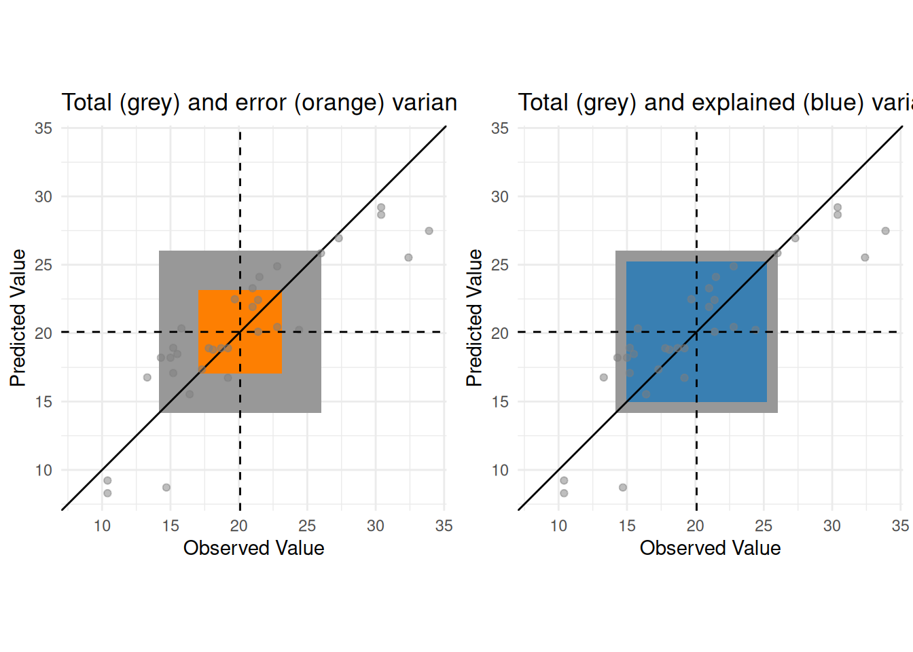
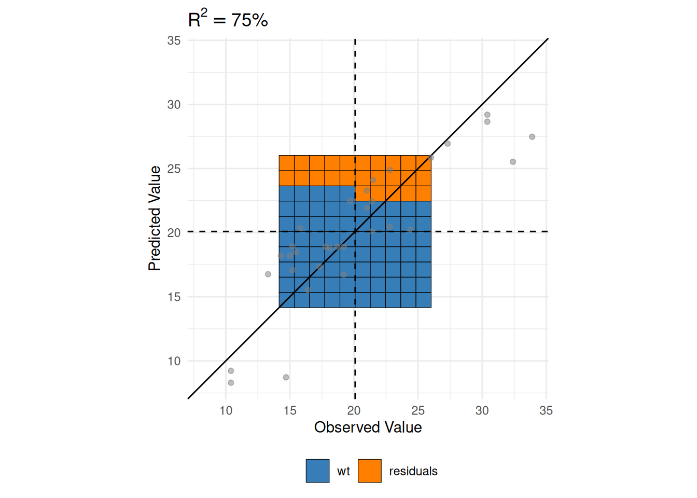

7 R-Squared
The coefficient of determination, often referred to as \(R^2\), is an important measure of model fit in statistics and data science when the dependent variable is quantitative. First introduced by Write (Write1921?), \(R^2\) is the proportion of variance in the dependent variable explained by the independent variable(s).
To begin, we must first define variance. Broadly, variance is a measure of spread around the mean. Most textbooks provide the following equation for variance:
Total sum of squares:
\[ SS_{total} = \Sigma{(x_i - \bar{x})^2} \]
Regression sum of squares:
\[ SS_{regression} = \Sigma{(\hat{y_i} - \bar{y})^2} \]
Error sum of squares:
\[ SS_{error} = \Sigma{(y_i - \hat{y_i})^2} \]
Thinking of variance as a measure of variation is generally approachable for students, and interestingly, Write (1921) used the word variation instead of variance in his seminal paper. The key for students is in the numerator, where each observation is subtracted from the mean (i.e. \(x_i - \bar{x}\)).
It turns out there are several ways of calculating \(R^2\), many provide equivelent solutions. Most introductions rely on algebra and complicated formulas. This paper provides an approach to understanding \(R^2\) using visualizations.



7.0.1 Example 2
Show the code
library(VisualStats)
set.seed(42)
df <- VisualStats::simulate(n = 100, r_squared = .7)
formu <- y ~ x1 + x2
lm(formu, df) |> summary()
Call:
lm(formula = formu, data = df)
Residuals:
Min 1Q Median 3Q Max
-6.0818 -1.5623 -0.1948 1.5037 5.9495
Coefficients:
Estimate Std. Error t value Pr(>|t|)
(Intercept) 5.0042 0.2405 20.80 < 2e-16 ***
x1 2.6608 0.2310 11.52 < 2e-16 ***
x2 -1.7987 0.2661 -6.76 1.04e-09 ***
---
Signif. codes: 0 '***' 0.001 '**' 0.01 '*' 0.05 '.' 0.1 ' ' 1
Residual standard error: 2.393 on 97 degrees of freedom
Multiple R-squared: 0.6416, Adjusted R-squared: 0.6342
F-statistic: 86.82 on 2 and 97 DF, p-value: < 2.2e-16Show the code
r_squared_vis(df, formu,
plot_total_variance = FALSE,
plot_error_variance = FALSE,
plot_regression_variance = FALSE,
plot_all_variances = FALSE,
plot_residuals_squared = FALSE,
plot_residuals = FALSE)Show the code
p1 <- r_squared_vis(df, formu,
plot_total_variance = TRUE,
plot_error_variance = FALSE,
plot_regression_variance = FALSE,
plot_all_variances = FALSE,
plot_residuals_squared = FALSE,
plot_residuals = FALSE) +
ggplot2::ylim(c(-20,20)) +
ggplot2::xlim(c(-20,20)) + ggplot2::ggtitle('')
p2 <- variance_vis(df$y,
sample_variance_col = '#999999',
plot_sample_variance = TRUE,
plot_population_variance = FALSE,
variance_position = 'middle',
point_size = 1) +
ggplot2::ylim(c(0,20))
cowplot::plot_grid(p1, p2)Show the code
r_squared_vis(df, formu,
plot_total_variance = FALSE,
plot_error_variance = FALSE,
plot_regression_variance = FALSE,
plot_all_variances = FALSE,
plot_residuals_squared = TRUE,
plot_residuals = TRUE)Show the code
r_squared_vis(df, formu,
plot_total_variance = FALSE,
plot_error_variance = TRUE,
plot_regression_variance = FALSE,
plot_all_variances = FALSE,
plot_residuals_squared = TRUE,
plot_residuals = TRUE)Show the code
r_squared_vis(df, formu,
plot_total_variance = TRUE,
plot_error_variance = TRUE,
plot_regression_variance = FALSE,
plot_all_variances = FALSE,
plot_residuals_squared = FALSE,
plot_residuals = FALSE)